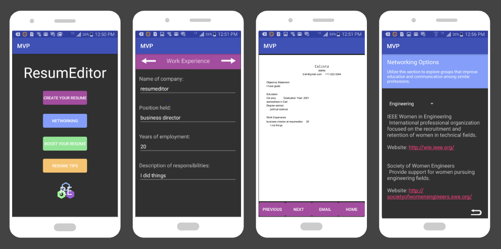
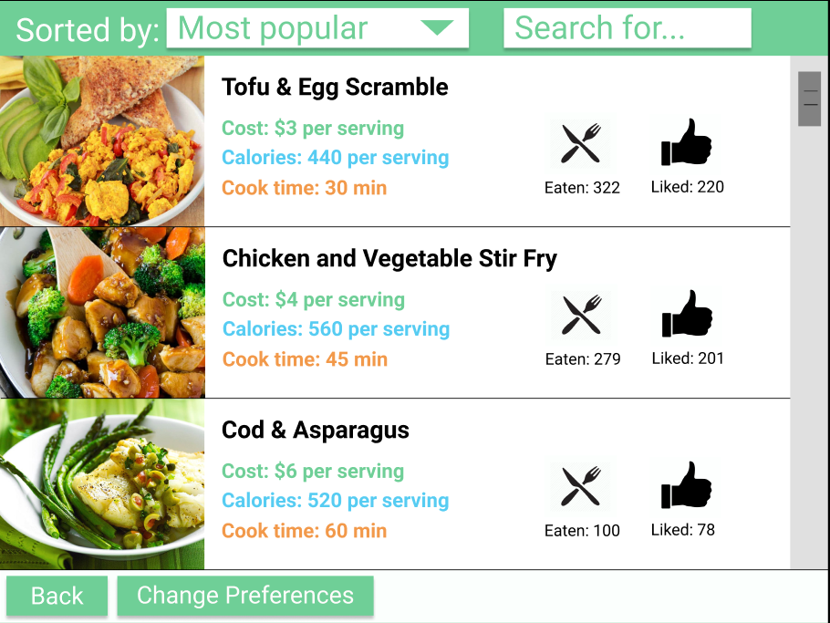
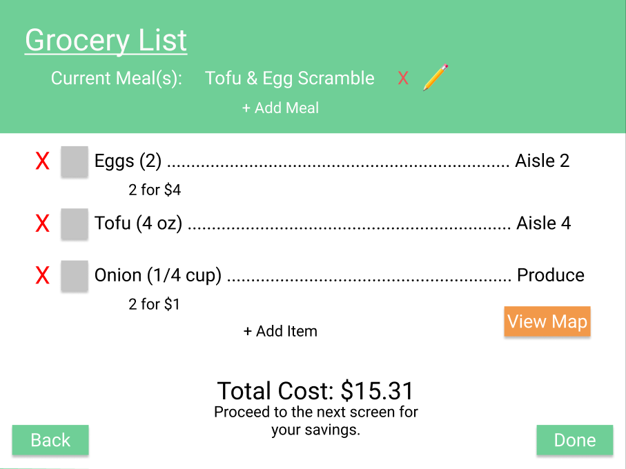
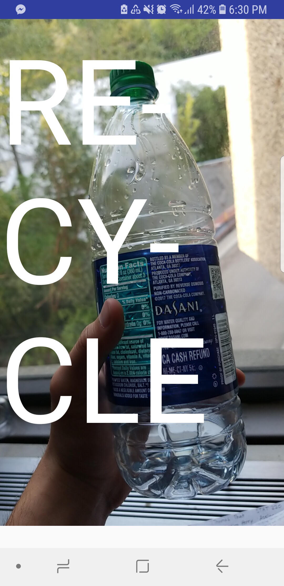
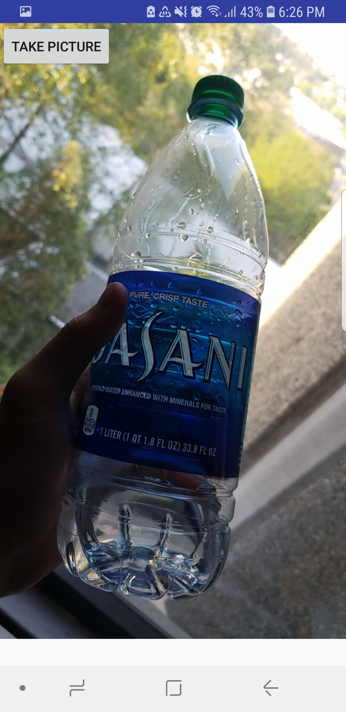
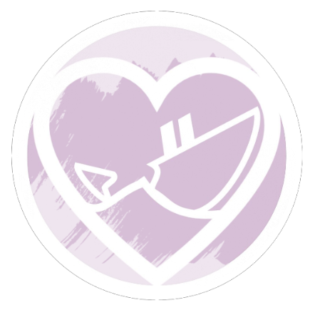

Hi, I'm a computer engineering and linguistics student at the University of Washington.
Like the majority of people in the programming sphere I have an interest in machine
learning.
I also enjoy computer science education as well as the cross-section of
computer science and linguistics as a means of improving the world through a better
understanding of each other and how we interact with technology.
Outside of the computer science
sphere I consider myself an amateur kickboxer, a connaiseur of lipsticks, and a pretty decent baker.
Women are severely underrepresented in STEM careers, and leadership positions as a whole. According to Computer Science Online there will be 1.4 million new jobs in computer science by 2020, yet the number of women pursuing careers in the field has continued to drop since the 80s
. There is a wealth of job opportunities, but there is a lack of people to fill these positions, and women are not taking advantage of these job sectors. In a study of personnel records referenced in an article published in The Atlantic, women working at HP applied for a promotion only when they believed they met 100 percent of the qualifications listed for the job. Men were happy to apply when they thought they could meet 60 percent of the job requirements.
There is a distinct lack of risk-taking derived from an absence of confidence in women.
To help bridge this confidence gap I worked to develop an Android application along with 3 other women that serves as a resume building tool meant to not only allow women to develop their resumes but boost them as well. The app itself allows you to go through multiple screens asking for information pertaining to work experience, education history, general personal information, and extracurriculars. Once a user has completed filling in all the necessary information they can then send a pdf version of their resume to themselves. Additionally, the user has access to various resume tips, networking searches, and scholarship information as a way to bolster their resume.
Low-income communities are at a greater risk of chronic diet-related illnesses such as diabetes and heart disease. With Simplifood myself and three other students sought to design a solution that helped alleviate the amount of time and money required to make healthy eating choices. After user research that focused on interviews with people from our target demographic and surveys distributed at foodbanks in the Seattle area, we knew the design should focus on how to decrease the cost of healthy eating within grocery stores without users needing to purchase new technologies. Simplifood is intended to be a grocery cart mounted device that allows users to search for recipes, access a map of the grocery store so they can plan out their shopping trip, and view coupons on necessary ingredients.
Displays the user's ability to search for a recipe based on various parameters like cost, time to make, and calorie limit.
Depicts the ability of a user to see their current shopping list, add additional items unrelated to the recipe, see their applicable coupons, and view the store map if they wish.
This project was developed as part of the University of Washington's Human Computer Interaction course. The following are links to blog posts on Medium that outline the project's life cycle in more detail, as well as a full working prototype.
User research and initial design post
Getting the design right post Prototype
Do you ever spend way too long staring at your trash contemplating if your coffee cup is compostable or recyclable? If so, Throwaway can be your new guide to all things trash. This Android application was developed alongside Ivan Montero at MLH Local Hacking Day in 2018 to identify whether a given piece of trash belongs in the garbage, recycle, or compost. We employed some object recognition tools to allow a user to simply take a photo of their trash, and then the screen is populated with which trash receptacle they should use as a responsible, sustainable citizen of our planet.
 Everyone has experienced a bad date that starts to go south quickly. Most times this is solved by having a friend text or call you with some emergency to use an excuse to leave. What happens when your friend is too busy or forgets? Or if you do not have any friends? Sail or Bail serves as an Android application that allows you to set the date and time of a future romantic rendezvous so you can schedule an emergency text message to be sent to your phone with a variety of excuses that require your immediate attention. Such excuses range from your roommate being locked out of the apartment or your mom coming for a spur of the moment visit .
This project was developed at SWEHacks 2018 in collaboration with Calista Moore and Marissa Magana. The project won first runner-up for Best User Interface.
For the past two years I've spent my spring break teaching introductory programming concepts to students at Neah Bay High School on the Olympic Peninsula. In preparation, I worked alongside a team of other students to develop the curriculum we ultimately taught to our students. The first year we focused on introducing the students to Scratch programming. This past year we utilized Circuit Playground Expresses to make varying projects from laser tag to autonomous cars. My ability to participate in this program for multiple years has been incredibly rewarding to see how the students grow over time and maintain such an astute interest in their projects each time.
The following are some examples of the Circuit Playground curriculum I developed which
includes a slidedeck for the first day of a four day workshop, as well as the handout I gave out to students to
demonstrate how to program the laser tag game.
Slidedeck Sample
Handout Sample
I have been fortunate enough to have spent the last three years as a teaching assistant for the Paul G. Allen School of Computer Science and Engineering's CSE Startup. The aim of this course is to provide incoming freshmen to the department an opportunity to better understand what computer science is through various morning classes that revolve around HTML/CSS, physical computing, and human centered design. Additionally, there is an added component of introducing students to the world of the university and technology through various activities ranging from seminars about campus resources to visits to various tech companies in the Seattle area.
My constant goal as a TA is to ensure that each student feels as though they have a place in the Allen School while being able to guide younger students to take advantage of all the opportunities they have available to them.
During fall quarter of 2018 and winter quarter of 2019 I worked as a teaching assistant for HCDE 598c. The class focused on introducing introductory programming concepts to Master's students in the department of Human Centered Design and Engineering at the University of Washington. I contributed to revisions of daily lesson plans as well as created and maintained a website used to display student work throughout the quarter.
Student Work Page